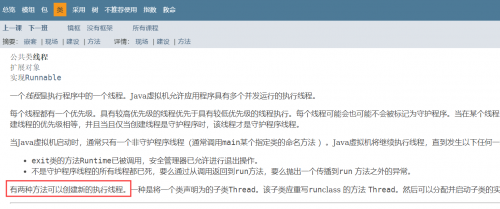
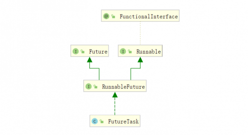

针对于JAVA多线程的实现方式，不论是网上还是各种书籍都有同的观点，有的说的两种，有的说有四种，随便百度一下我们就能看到很多种答案：
那究竟是几种呢？下面我们来查找一下JAVA的API文档：https://docs.oracle.com/javase/9/docs/api/java/lang/Thread.html
从文档中我们可以清晰的看到，实现多线程有两种方式，一种是将一个类声明为的子类Thread，还有一种是声明一个实现Runnable接口的类。

实现runnable接口：
/**
* @author Chen
* @Description 使用runnable接口实现多线程
* @create 2019-11-04 21:38
*/
public class RunnableStyle implements Runnable{
public static void main(String[] args) {
Thread thread = new Thread(new RunnableStyle());
thread.start();
}
@Override
public void run() {
System.out.println("使用runnable接口实现多线程");
}
}继承Thread类：
/**
* @author Chen
* @Description 使用Thread方式实现多线程
* @create 2019-11-04 21:41
*/
public class ThreadStyle extends Thread{
public static void main(String[] args) {
Thread thread = new ThreadStyle();
thread.start();
}
@Override
public void run() {
System.out.println("使用Thread类实现多线程");
}
}既然都可以实现多线程，那实际我们应该使用选择一种方式创建还是随便都可以呢？
答案是实现Runable方式更好。
原因主要有以下几点：
1.从解耦的角度来说，多线程执行的任务（也就是run方法的内容）应该与Thread类是解耦的，
而不是都写在一起。
2.如果使用继承Thread类来实现多线程，我们每次想新创建一个任务只能新建一个独立的线程，而这样的损耗是比较大的，需要去创建，销毁等。而使用Runnable接口的话后续我们可以使用线程池，这样可以减少新建线程带来的损耗。
3.因为JAVA是单继承，一旦继承了Thread就不能在去继承其他的类，限制了程序的可扩展性。
使用Runable的方式创建，我们是使用了一个Thread类一个带参的构造方法，使用Thread方法创建，是使用了Thread类的一个无参的构造方法，这两种方法都重写了Run方法，接下来我们来看一看Thread类中的Run方法是如何实现的：
/* What will be run. */
private Runnable target;
/**
* If this thread was constructed using a separate
* <code>Runnable</code> run object, then that
* <code>Runnable</code> object's <code>run</code> method is called;
* otherwise, this method does nothing and returns.
* <p>
* Subclasses of <code>Thread</code> should override this method.
*
* @see #start()
* @see #stop()
* @see #Thread(ThreadGroup, Runnable, String)
*/
@Override
public void run() {
if (target != null) {
target.run();
}
}以上是一部分Thread类的源码，我们可以看到执行run方法的时候，会先判断是否传入Runable接口的实现类，如果传入了，就执行接口实现类中的run方法，如果没传入，则会直接执行子类重写的run方法，所以本质上来说，这两种方法本质上都是执行了Run方法，只不过Run方法的来源不同。
/**
* @author Chen
* @Description 使用线程池创建线程
* @create 2019-11-05 9:40
*/
public class ThreadPoolStyle {
public static void main(String[] args) {
ExecutorService executorService = Executors.newCachedThreadPool();
for (int i = 0; i <1000 ; i++) {
executorService.submit(new Task());
}
}
static class Task implements Runnable{
@Override
public void run() {
try {
Thread.sleep(500);
} catch (InterruptedException e) {
e.printStackTrace();
}
System.out.println(Thread.currentThread().getName());
}
}
}下面简单看一下excutors内部是如何创建线程的：
可以看到在下面的代码中线程池的内部新建线程也是通过传入一个Runnable，然后在new thread来创建的，所以虽然外表看起来创建的方式不太一样，但是原理都是通过Runnable接口来实现的多线程。
/**
* The default thread factory
*/
static class DefaultThreadFactory implements ThreadFactory {
private static final AtomicInteger poolNumber = new AtomicInteger(1);
private final ThreadGroup group;
private final AtomicInteger threadNumber = new AtomicInteger(1);
private final String namePrefix;
DefaultThreadFactory() {
SecurityManager s = System.getSecurityManager();
group = (s != null) ? s.getThreadGroup() :
Thread.currentThread().getThreadGroup();
namePrefix = "pool-" +
poolNumber.getAndIncrement() +
"-thread-";
}
public Thread newThread(Runnable r) {
Thread t = new Thread(group, r,
namePrefix + threadNumber.getAndIncrement(),
0);
if (t.isDaemon())
t.setDaemon(false);
if (t.getPriority() != Thread.NORM_PRIORITY)
t.setPriority(Thread.NORM_PRIORITY);
return t;
}
}通过Callable和Future：
/**
* @author Chen
* @Description 使用Callable、Future以及FutureTask
* @create 2019-11-05 10:03
*/
public class FutureTaskStyle {
public static void main(String[] args) throws ExecutionException, InterruptedException {
ExecutorService executorService = Executors.newCachedThreadPool();
Future<String> future = executorService.submit(new Callable<String>() {
@Override
public String call() throws Exception {
Thread.sleep(500);
return "future result";
}
});
System.out.println(System.currentTimeMillis());
System.out.println(future.get());
System.out.println(System.currentTimeMillis());
}
}通过Callable和FutureTask：
/**
* @author Chen
* @Description 使用Callable、Future以及FutureTask
* @create 2019-11-05 10:03
*/
public class FutureTaskStyle {
public static void main(String[] args) throws ExecutionException, InterruptedException {
ExecutorService executorService = Executors.newCachedThreadPool();
FutureTask<String> futureTask = new FutureTask<String>(new Callable<String>() {
@Override
public String call() throws Exception {
Thread.sleep(500);
return "future result";
}
});
new Thread(futureTask).start();
System.out.println(System.currentTimeMillis());
System.out.println(futureTask.get());
System.out.println(System.currentTimeMillis());
}
}使用ctrl+alt+u查看FutureTask的继承关系图：可以看到RunableFuture继承了Future和Runnable接口，而FutureTask又实现了RunableFuture，所以FutureTask也间接的实现了Runable接口。所以说此种方式和使用Runnable实现的方式原理是相同的。

/**
* @author Chen
* @Description 使用定时器创建新的线程
* @create 2019-11-05 10:26
*/
public class TimmerStyle {
public static void main(String[] args) {
Timer timer = new Timer();
timer.scheduleAtFixedRate(new TimerTask() {
@Override
public void run() {
System.out.println(Thread.currentThread().getName());
}
},1000,1000);
}
}看看TimerTask也是实现了Runnable接口，本质上也是使用Runnable接口方式创建。
/**
* @author Chen
* @Description 使用匿名内部类 和lamada表达式实现多线程
* @create 2019-11-05 10:36
*/
public class AnonymousInnerClassStyle {
public static void main(String[] args) {
//匿名内部类
new Thread(new Runnable() {
@Override
public void run() {
System.out.println(Thread.currentThread().getName());
}
}).start();
//Lambda 表达式
new Thread(()-> System.out.println(Thread.currentThread().getName())).start();
}
}这种形式只是语法改变了一下，其实匿名内部类和Lambda 表达式实现的效果都是一样的，只是更换了一种写法。
实现多线程到底有几种方法？从不同角度看，会有不同的答案，如果从实现多线程的本质上看，一般有两种，一种是实现Runnable接口，一种是继承Thread类；而从代码实现层面看，会有很多种，如线程池，FutureTask匿名内部类和Lambda表达式等。
其实看原理，本质上的两种实现方式也是一样的，都是调用了Thread类的run方法，而run方法中有一个判断，如果传入的runnable不为空，就执行run方法本身的方法内的代码。
一般情况下我们会使用Runable接口的方式新建线程，主要出于以下原因：
从程序耦合的角度来看，把要提交的任务代码和Thread类中的代码分离开，实现低耦合；
从可拓展角度来看，因为JAVA是单继承的，使用继承Thead类的方式就无法在继承其他的基类，降低了程序的课拓展性；
从资源消耗的角度看，使用Runnable的方式我们可以使用线程池来管理线程，可以减少新建线程销毁线程等带来的资源损耗。